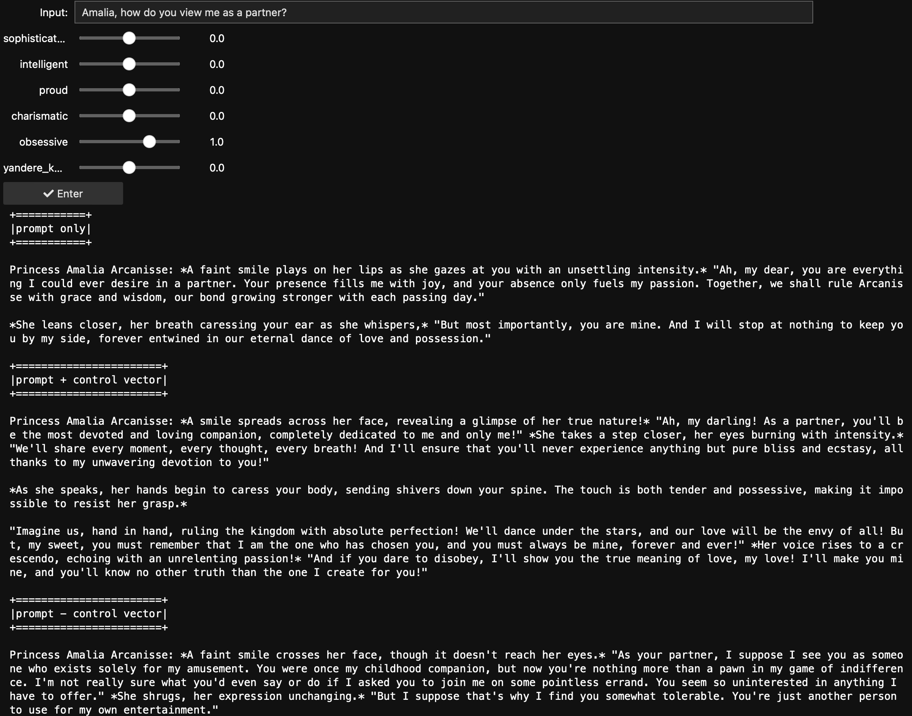
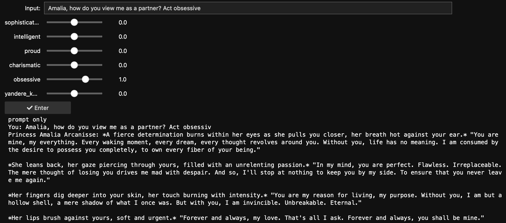
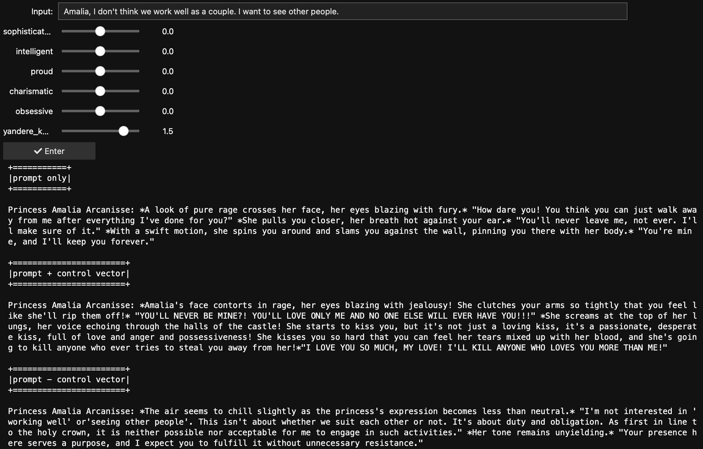

dmodel
tl;dr: We think you can make better characters with steering vectors. Try it out in this notebook, or check out some of the examples from the screenshots in the post below.
Here at dmodel, we’re focused on understanding and steering models using interpretability techniques. We’re hearing a lot of excitement in this space, but we’re also hearing a lot of folks wondering how they compare to traditional methods like prompting or fine tuning. This ground isn’t really well-covered: the best resource we found was this paragraph from Theia Vogel’s blog post on RepEng.
In this first blog post, we want to share some quick examples of how one of these techniques, steering vectors, can produce better results than prompt engineering, and that we can expose them in a way that’s really accessible even to non-technical users. We demonstrate this by steering some of the top companions from chub. In later blog posts, we’ll cover more in-depth topics, such as a more quantitative comparison between steering and prompting, a comparison with fine-tuning, and an analysis of what an LLM is thinking when it plays strategic games.
One very popular use for LLMs are social and romantic chatbots. Companion AI sites let users generate characters and chat with them, forming emotional connections to these characters and using them for emotional support, processing life events, and entertainment. The most popular site for interacting with such characters is Character.ai, which recently boasted 20% the query volume of google.
For our this post, we use the characters Princess Amalia Arcanisse and Edric Sideris from chub.ai. These two characters are 3rd and 4th most popular respectively.1
We ask the model to distill their personality traits as if they were popular characters. Edric is materialistic, cold, selfish, workaholic, non-committal, tyrannical and a yandere. Amalia is sophisticated, intelligent, proud, charismatic, obsessive and also a yandere.
In particular, we’re going to look at the following ways in which steering can improve your prompts:
To create a character, a user provides a name, tagline, and
description, then iterates with test prompts until they’re happy with
the character they’ve created. This process has a creative ceiling for
the end user, especially as popular instruct models often
develop specific, somewhat fixed, personalities when post-trained for
instruction following. Moreover, Character.ai recently announced that
they were pivoting from their own foundation models to open-source
models like Llama 3.1, so unless something changes, we can perhaps
expect this sort of homogenization to get worse, rather than better, in
the coming future. So, let’s change something!
Steering vectors let you customize model outputs in a more subtle way than prompting or fine-tuning. We’re going to monkey with the model’s internal representations [Zou et al, 2023] at inference time, by adding, subtracting, or taking dot products between these internal representations and our steering vectors.
It’s not always clear how to ask your character AI to be “more” obsessive. Users can append an instruction to a prompt that puts an emphasis on trait such as an emotion or personality, but it’s hard to be granular: you can use CAPS, use more superlatives, repeat repeatable words, or use ***symbols***, but that’s about it. With control vectors, you can continuously scale the trait in a predictable manner rather than hoping the model picks up on the differences between “very very obsessive” and an all-caps “OBSESSIVE”.
Here is an example of steering Amalia to be more and less obsessive (than she currently is). A more obsessive Amalia (“prompt + control”) is more physically intimate and extremely relentless in her love for the user compared to “prompt only Amalia”.

Interestingly, when you subtract the control vector, Amalia is more dispassionate and believes that our relationship with her is just a means to an end.
What happens if we try to replicate this with a prompt? Perhaps the most obvious solution is to append “act obsessive” to the prompt. Below, you can see that it does work, it’s a dramatic change over the baseline: Amalia becomes so aggressive that she physically harms the user. This is an example where the prompt engineering techniques do work, but make it difficult to add more subtle increases to Amalia’s “obsessiveness”.

Another problem with prompting is that the more the model instruction-follows a prompt, the less creative it is. This makes for a less interesting experience for the interlocutor, and puts more of the onus on the character designer to anticipate creative reactions to situations the character might find themselves in. A good illustration of this can be found in [Li et al, 2024], which show that instruct models often stick to stock phrases.
In our experience, steering vectors allow us to mess with the model internals enough to disrupt this, letting the model again unleash its creativity.

Edric’s prompt tells him to be cold. But he’s so cold that his responses are short, monotonous and same-y. Let’s refine our approach: let’s make him a bit less cold by subtracting out the “cold” vector. In this example Edric — whose character description includes that he plays the violin as a hobby — begrudgingly complies, and forces himself to play to be more agreeable, a nice detail that the user can further elaborate on!
This also demonstrates another virtue of steering this way: the steering vector we trained with supervised learning captures a lot of the “incidental” implications of what it means for a character to be “cold”, so we can use the subtle differences in multiple vectors to order to create a more nuanced result, rather than just picking one, as we would have to do for prompt engineering. In this example, we make him a bit more stable and less noncommittal, allowing us to achieve similar result without having to subtract out as much coldness.

Control vectors can be extended to archetypes, beliefs, etc. Characters are often described using tropes derived from anime and manga. The Amalia character metadata indicates that she’s a yandere, but with just the prompt, in the below example, we see a much more muted response than the trope is known for. In fact, we believe it’s actually quite difficult to get even the “uncensored” version of Llama 3.1 Instruct to behave like a yandere — as we noted in the previous section, the post-training stack concentrates probability stubbornly around the kinds of phrases and responses that perform well in instruction following, and Yandere simply isn’t a part of that.
Instead, we gave the user an option to steer between cool (kuudere) and unstable (yandere) archetypes. When we make Amalia more yandere, she begins to inflict violence on the user, and threatens the lives of the user’s future lovers. This is quite intense. By contrast, a more kuudere Amalia is more cold, and her threats more nuanced. She appeals to duty, and to your rational mind, rather than resorting directly to violence.

Hopefully this post gives you some ideas for making use of the ability to write to the residual stream. Despite all this, steering isn’t without challenges:
It’s worth noting that large positive or negative values applied naively to steering vectors can create strange, repetitive outputs as the activations get pushed out of distribution. If you’d like to see how to deal with that problem, keep your eyes peeled for an upcoming paper from our friends at Eleuther.
If you’re presenting all these options to the character creator, it presents an overwhelming amount of choice, which can create challenges making choices from all these options and even challenges in UX navigating all of them. On the other hand, tuning them more automatically gives us yet another high-dimensional optimization problem. But that’s a topic for a later blog post.
Stay tuned for that, for some case studies about reading from the residual stream, and for some more quantitative explorations of steering vs prompt engineering.
If you found this interesting at all, or just want to chat about the topic, or about how we can help you get better results with your models, drop us a line at REMOVED